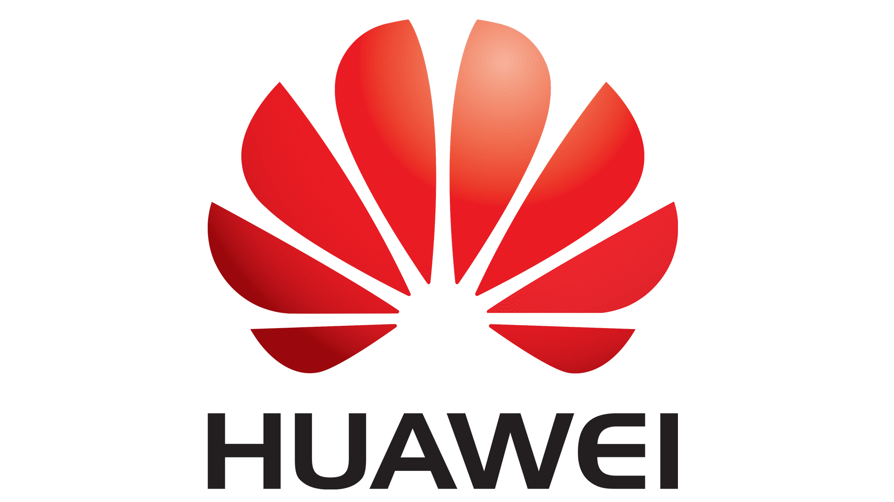

TELECOM · INFRASTRUCTURE · SECURITY DEVELOPMENT
Hi, I'm Sakib Hasan
Infrastructure & Network Operations Engineer
5G Core · Network Infrastructure · Cloud · Security Operations
Infrastructure and Network Operations Engineer supporting Huawei 5G Core and telecom SOC operations, with hands-on experience across UDM, AAA, ENUM, servers, network devices, and infrastructure monitoring. Currently pursuing an MSc Information Systems Security (MISS) and developing deeper expertise in cloud and security operations.
Research & Publications
RF Signal Classification & Modulation Recognition
Master’s research exploring CNN–LSTM based automatic modulation classification with emphasis on SNR robustness and cross-domain evaluation.
About Me
Telecom and infrastructure operations
In my current role at Huawei Technologies Bangladesh Ltd., I support the Grameenphone GP UDM project. My work includes monitoring Huawei 5G Core UDM and supporting infrastructure, analysing alarms and operational KPIs, performing initial troubleshooting, and coordinating escalation and service-restoration updates.
Previously, I worked in RF and network engineering, supporting wireless links through RF planning, link budgeting, spectrum analysis, site surveys, and PTP/PTMP deployment activities. I am pursuing an MSc in Information Systems Security (MISS) at BUP and continuing to build capability in Linux, cloud infrastructure, automation, and security operations.
- 5G Core monitoring, alarm analysis, and escalation
- RF planning, link budgeting, and PTP/PTMP support
- RHCSA-backed Linux administration
- Cloud infrastructure and security operations development
Technical Focus
Experience, practice, and research
A clear distinction between areas supported by professional experience and areas I am continuing to develop.
Experience
Professional Journey
Building expertise across network engineering and cybersecurity domains.
Feb 2026 — Present
Network Monitoring Engineer — 5G Core UDM Project

HHuawei Technologies Bangladesh Ltd.South Asia ICT Consulting & System Integration Department | Grameenphone SOC
Monitor Huawei 5G Core UDM, servers, routers, and storage systems in a 24×7 SOC environment to maintain service availability and infrastructure stability. Perform real-time incident detection, alarm analysis, initial troubleshooting, escalation, KPI analysis, and cross-functional service restoration coordination.
Oct 2025 — Feb 2026
Assistant Network Engineer — Radio Frequency
Amber IT Ltd.Radio Frequency & Network Engineering
Supported RF planning, link budgeting, spectrum analysis, wireless link deployment, L2/L3 validation, and network incident coordination for PTP/PTMP infrastructure.
Nov 2024 — Oct 2025
IT Executive — E-commerce & System Support
I
Isharify LimitedE-commerce & System Support
Supported day-to-day IT and e-commerce operations, including Amazon and eBay marketplace tasks, website-related updates, and routine operational issue coordination.
Skills
Technical capabilities
Tools and technologies I work with across network engineering and cybersecurity.
Security Operations
Production exposure to alarm analysis, incident triage, escalation, documentation, and operational reporting
Networking & Security
Working knowledge of TCP/IP, DNS, DHCP, VLANs, routing, segmentation, firewall policies, VPN, and troubleshooting
Linux & Infrastructure
RHCSA-backed Linux practice across RHEL, Ubuntu, SSH, permissions, hardening, Bash, logging, and monitoring
Telecom Platforms
Current telecom exposure across Huawei 5G Core, UDM, AAA, ENUM, iMaster MAE, and CyberArk PAM
Cloud & Virtualization
Developing capability across AWS EC2/VPC/IAM/S3, Huawei FusionCloud, VMware ESXi, VirtualBox, and Docker
RF Engineering
Hands-on RF role exposure across link budgeting, LOS surveys, spectrum analysis, and PTP/PTMP deployment support
Career Highlights
Professional context at a glance
A concise view of the environments, responsibilities, and development path represented in this portfolio.
24×7 telecom SOC
Production operating context with structured monitoring, escalation, handover, and service-restoration coordination.
Huawei 5G Core
Hands-on exposure across UDM, AAA, ENUM, servers, network devices, storage, and iMaster MAE.
MSc MISS in progress
Academic development in Information Systems Security alongside cloud and security-operations practice.
Three professional roles
Experience across telecom operations, RF/network engineering, and enterprise IT support.
Selected Writing
From The Blog
Selected technical notes on RF engineering, network infrastructure, and security topics.